QUIC: The Future of Internet Transport¶
Hello again, my fellow digital warriors! If you thought my last blog on TLS/SSL was intense, well, grab your favorite beverage because today we’re diving into something that’s reshaping how the entire internet works. Yes, I’m talking about QUIC — the protocol that’s making TCP+TLS look like a horse-drawn carriage in the age of Formula 1 racing.
Those who missed my previous divine wisdom on TLS (shame on you!, just kidding 😁), go read it first, then come back here. For my loyal followers who’ve been patiently waiting under my protective digital umbrella ☂️, today’s your day to witness the future of internet communication unfold.
What is QUIC Protocol?¶
QUIC (Quick UDP Internet Connections) is Google’s brainchild from 2012 that has now evolved into an IETF standard. Think of QUIC as that overachiever student who not only does their own job perfectly but also takes over everyone else’s responsibilities and somehow makes everything work better. While traditional web communication relied on a team of protocols (TCP for reliability, TLS for security, HTTP/2 for efficiency), QUIC said “Hold my coffee” and decided to handle reliability, security, and efficiency all by itself.
But here’s where it gets interesting — QUIC doesn’t replace any existing protocol (TCP/UDP); it actually builds on top of UDP. It’s like taking a basic bicycle (UDP) and turning it into a motorcycle while keeping the original wheels. The protocol operates primarily at the transport layer of the networking stack, but it’s so ambitious that it also handles session and presentation layer responsibilities, essentially spanning layers 4–6 of the OSI model.
Why Use UDP Underneath?¶
Now, you might be wondering, “Why UDP? Isn’t UDP that unreliable protocol that just throws packets into the void and hopes for the best?” Well, my curious friend, that’s exactly why it’s brilliant.
The internet has a dirty little secret called “protocol ossification.” Over the decades, middleboxes (firewalls, load balancers, NATs) have become so comfortable with TCP that they’ve started making assumptions about how it should behave. Try to introduce a new transport protocol, and these middleboxes will look at it like a bouncer looking at a fake ID — immediate rejection.
Note: Protocol ossification refers to the loss of flexibility and ability to evolve in network protocols. This happens when middlebox devices become sensitive to how the protocol looks on the wire and can misinterpret or block valid protocol features. This makes it hard to introduce new features and improvements to protocols.
UDP, however, is the internet’s equivalent of a universal key. It’s been around since the dawn of networking, it’s simple, and every device on the planet knows how to handle it. By using UDP as the foundation, QUIC can innovate freely on top without worrying about some ancient router in a forgotten data center dropping its packets.
It’s like wearing a business suit to sneak your revolutionary ideas into a conservative corporation — the outside looks familiar, but the inside is pure innovation.
How Data Traveled Before: TCP+TLS+HTTP/2¶
Let me paint you a picture of the old way, and trust me, it’s like watching a bureaucratic nightmare unfold in real-time.
Why This Combination Was Chosen¶
Back in the day, each protocol had a specific job, and they were pretty good at it:
TCP was the reliable guy who made sure every packet arrived and in the right order
TLS was the security guard who encrypted everything
HTTP/2 was the efficiency expert who figured out how to send multiple requests at once
This separation of concerns made sense from an engineering perspective. Each layer could be developed, tested, and improved independently. It was like having specialists for every task in your company.
For example, let’s say you’re browsing your favorite online shopping site from Delhi, and the server is in California. Here’s what happens with the traditional approach:
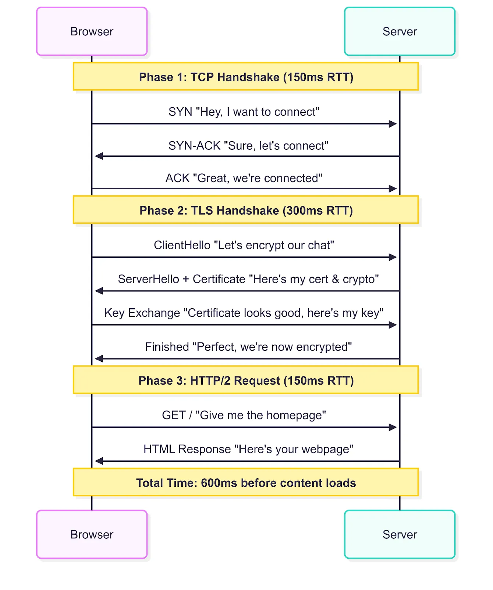
Phase 1: TCP Handshake (Round Trip 1)
Browser → Server: “Hey, I want to connect” (SYN)
Server → Browser: “Sure, let’s connect” (SYN-ACK)
Browser → Server: “Great, we’re connected” (ACK)
Phase 2: TLS Handshake (Round Trips 2–3)
Browser → Server: “Let’s encrypt our chat” (ClientHello)
Server → Browser: “Here’s my certificate and crypto preferences” (ServerHello + Certificate)
Browser → Server: “Certificate looks good, here’s my key material” (Key Exchange)
Server → Browser: “Perfect, we’re now encrypted” (Finished)
Phase 3: HTTP/2 Request (Round Trip 4)
Browser → Server: “Give me the homepage” (GET /)
Server → Browser: “Here’s your webpage” (HTML content)
With a 150ms round trip time between Delhi and California, you’re looking at 600ms just to start seeing content. That’s longer than the average human attention span on the internet!
Problems faced with this approach:¶
The traditional approach suffered from several issues that made web browsing feel sluggish:
Multiple Round Trips: As we saw above, you needed at least 3–4 round trips before any actual data could flow. In a world where every 100ms delay costs websites real money, this was painful.
Head-of-Line Blocking: Even with HTTP/2’s multiplexing, if one TCP packet got lost, everything behind it had to wait. It’s like having multiple lanes on a highway that all get blocked because one car broke down in the first lane.
Connection Brittleness: Switch from WiFi to cellular? Your TCP connection dies and you start over. Change networks? Start over. Move to a different location? You guessed it — start over.
Protocol Ossification: Want to improve TCP? Good luck getting your improvements deployed across millions of middleboxes worldwide.
How QUIC Data Travels Now¶
QUIC looked at this mess and said, “What if we could do all of this in one go?” And that’s exactly what it did.
QUIC’s design philosophy is simple: combine the best of all worlds while eliminating the worst. It provides TCP’s reliability, TLS’s security, and HTTP/2’s efficiency, but it does so without the overhead and complexity of running three separate protocols.
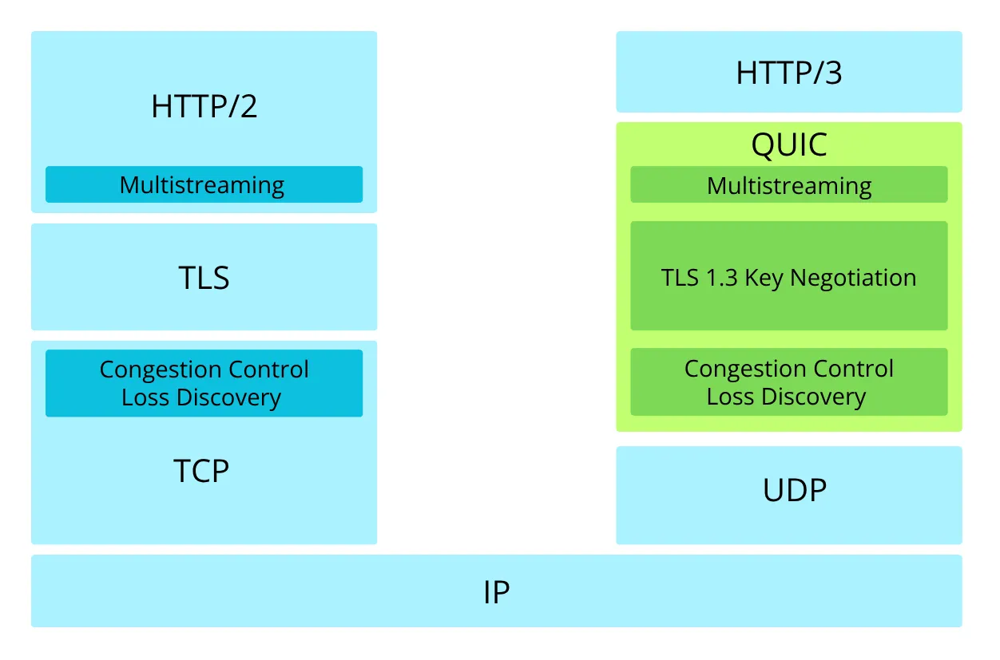
The key insight was that most of the handshaking overhead came from the fact that TCP, TLS, and HTTP/2 all needed to establish their own state independently. QUIC said, “What if they all shared state from the beginning?”
For example, same scenario — you’re in Delhi browsing a site hosted in California. Here’s the QUIC magic:
Phase 1: QUIC Handshake (Round Trip 1)
Browser → Server: “Connect + Encrypt + Give me homepage” (Initial packet with ClientHello + HTTP request)
Server → Browser: “Connected + Encrypted + Here’s your webpage” (Server response with certificate + encrypted content)
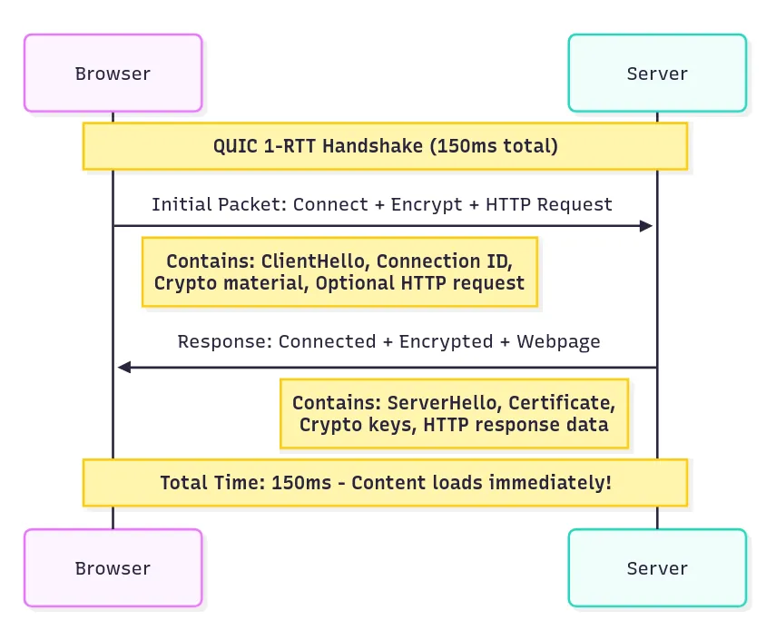
That’s it. One round trip. 150ms and you’re seeing content.
But wait, it gets better. If you’ve connected to this server before:
Phase 1: 0-RTT Connection
Browser → Server: “Here’s my cached crypto state + Give me homepage” (0-RTT packet)
Server → Browser: “Here’s your webpage” (Immediate response)
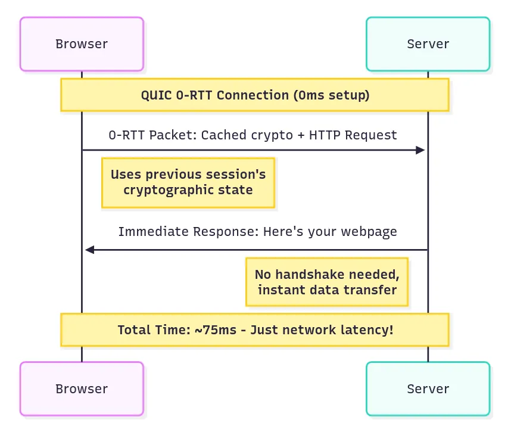
Zero round trips. Your request and the response happen at the same time it would have taken just to say “hello” with TCP.
Certificate Issuance (Pre-QUIC Handshake)¶
Before any QUIC handshake can happen, servers need to obtain their certificates through a specific process:
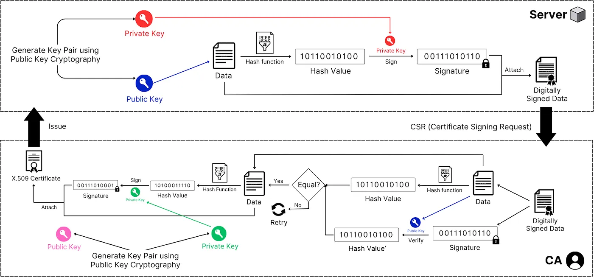
Step 1: Certificate Signing Request (CSR) Generation
Server generates a public-private key pair
Server creates data containing its public key, domain name, organization details, and other identifying information
This data is first passed through a hashing function then signed with the server’s private key to create CSR
Step 2: CA Verification and Signing
Server submits CSR to Certificate Authority (CA)
CA verifies the server’s identity through domain validation, organization validation, or extended validation
CA creates certificate data containing: server’s public key, domain name, validity period, CA information, and certificate policies
CA hashes this certificate data using a cryptographic hash function (typically SHA-256)
CA signs the hash with its private key, creating a digital signature
CA combines the certificate data and signature to form an X.509 certificate
Step 3: Certificate Distribution
CA issues the certificate to the server
Server installs the certificate and can now present it during QUIC handshakes
QUIC Handshake¶
Now comes the exciting part, how QUIC actually works when you visit a website:
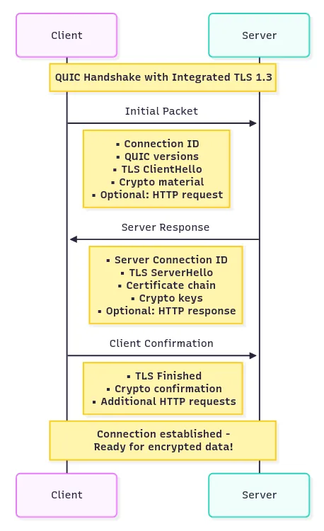
Step 1: Client Initial
Client initiates connection and sends supported QUIC versions, cipher suites, and random number
Client generates Connection ID (a random identifier that stays constant even if IP addresses change)
Client embeds TLS 1.3 ClientHello directly within QUIC Initial packet
Client includes QUIC transport parameters and initial cryptographic material
Optionally includes early application data (HTTP request) for returning connections
Step 2: Server Response
Server responds with chosen QUIC version, cipher suite, and its random number
Server sends its certificate chain (server cert + intermediate CA certs) embedded in QUIC packet
Server provides its own Connection ID and QUIC transport parameters
Server includes TLS 1.3 ServerHello with cryptographic material to establish keys
Server can optionally include early HTTP response data
Note: You might wonder why the server sends the entire certificate chain instead of just its own certificate. When a client receives only the server certificate, it can see issuer information like “Intermediate CA X,” but that’s just metadata — not the actual cryptographic material needed for verification. The server certificate essentially says “I was signed by Intermediate CA X,” but the client needs the actual intermediate CA certificate containing its public key to verify that signature. The client uses the Root CA’s public key (pre-installed in the client’s trust store) to verify intermediate certificate signatures.
Step 3: Certificate Verification and Completion
Client extracts the certificate data and signature from QUIC packet
Client identifies the issuing CA from certificate information
Client uses CA root certificates pre-installed in its trust store (doesn’t contact CA for public key)
Client uses the CA’s public key (from trust store) to verify the signature
Client hashes the certificate data using the same algorithm specified in the certificate
Client compares the verified hash with the computed hash — if they match, the certificate is authentic
Client verifies certificate validity period, domain name matching, and certificate chain up to a trusted root
Client derives QUIC connection keys from TLS key schedule
Client sends TLS Finished message embedded in QUIC packet
Connection is now ready for encrypted application data
Step 4: Secure Communication
All subsequent communication is encrypted using the established session keys Unlike traditional TCP+TLS, there’s no separate “TLS handshake time” because TLS is integrated into QUIC itself The beauty here is that steps 2 and 3 can include actual application data. Unlike TCP+TLS where you had to wait for all handshakes to complete before sending any real data, QUIC lets you piggyback your actual requests and responses on the handshake messages. This entire process, including certificate validation, happens in the same round trips needed to establish the QUIC connection.
The Head-of-Line Blocking Problem¶
Head-of-Line (HOL) blocking is a performance-limiting problem that occurs when a queue of packets or data is held up by the first packet in the queue, even if other packets could be processed. This means that the entire queue is blocked, even if some packets behind the first one could be transmitted or processed without issue. This can significantly reduce speed and cause delays in systems that rely on ordered processing.
This is where things get really interesting, and where QUIC shows its true genius.
Wasn’t This a Problem Before?, Oh, it absolutely was. With HTTP/1.1, browsers had to open multiple TCP connections to download resources in parallel because each TCP connection could only handle one request at a time. Your browser would typically open 6–8 connections per domain, which was wasteful and slow.
How HTTP/2 Tried to Resolve This?¶
HTTP/2 was designed to solve this by introducing multiplexing. Instead of multiple connections, you’d have one TCP connection carrying multiple “streams” of data. Think of it like having multiple conversations over the same phone line — you could interleave the words from different conversations.
Here’s how HTTP/2 multiplexing worked:
Stream 1 (HTML): [chunk1] [chunk2] [chunk3]
Stream 2 (CSS): [chunk1] [chunk2]
Stream 3 (JS): [chunk1] [chunk2] [chunk3]
On the wire:
[HTML-chunk1][CSS-chunk1][JS-chunk1][HTML-chunk2][CSS-chunk2][JS-chunk2]…
This was much more efficient than HTTP/1.1’s approach.
But HTTP/2 still had issues. HTTP/2 solved head-of-line blocking at the application layer but was still vulnerable to it at the transport layer. TCP, being the reliable protocol it is, delivers data in order. So if one packet got lost:
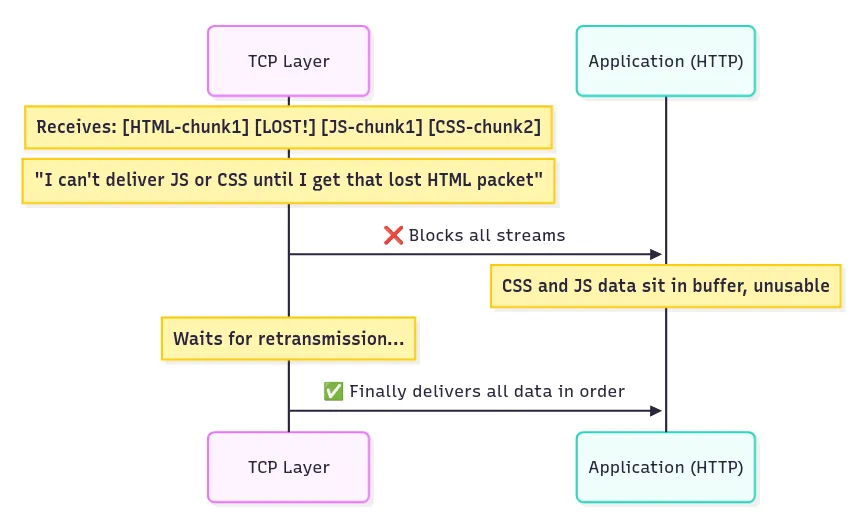
TCP sees: [HTML-chunk1] [LOST!] [JS-chunk1] [HTML-chunk2] [CSS-chunk2]
TCP says: “I can’t deliver JS-chunk1, HTML-chunk2, or CSS-chunk2 until I get that lost packet”
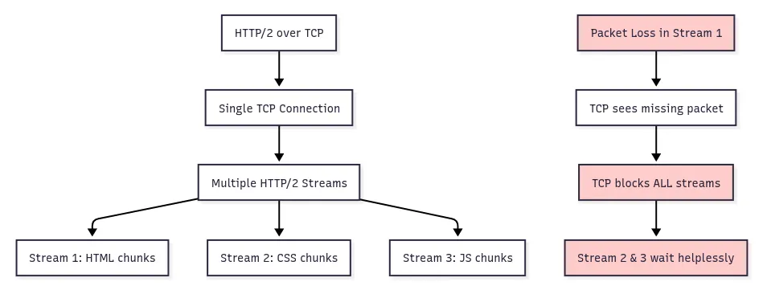
So even though your CSS and JavaScript data had arrived perfectly fine, they’d sit in TCP’s buffer waiting for that one lost HTML packet to be retransmitted. It’s like having a perfectly good pizza delivery delayed because the driver is waiting for traffic to clear in a completely different part of town.
How QUIC Solves It¶
QUIC implements true stream independence at the transport layer. Each QUIC stream has its own sequence space, so loss in one stream doesn’t affect others:
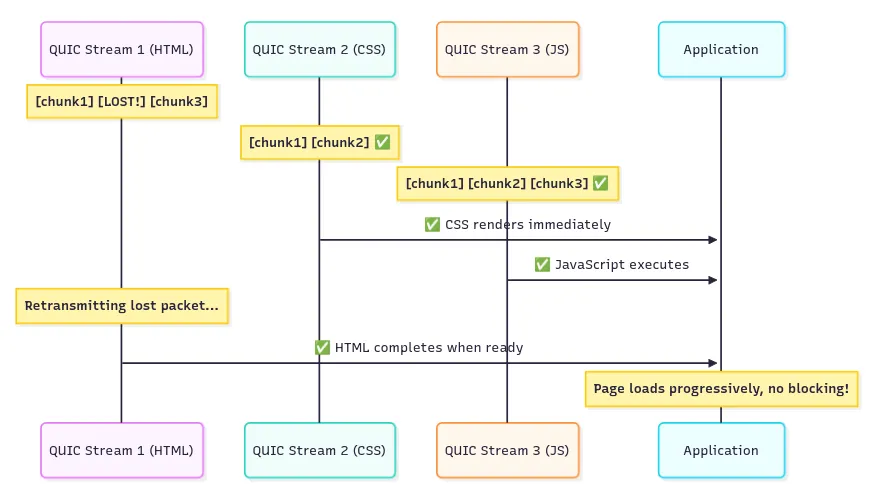
QUIC Stream 1 (HTML): [chunk1] [LOST!] [chunk3] ← Only this stream waits
QUIC Stream 2 (CSS): [chunk1] [chunk2] ← Continues normally
QUIC Stream 3 (JS): [chunk1] [chunk2] [chunk3] ← Continues normally
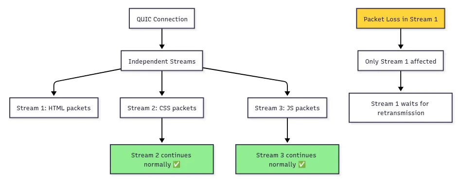
It’s like having separate delivery trucks for each resource — if one truck gets stuck in traffic, the others keep delivering.
IMPORTANT:
HTTP/1.1 created multiple TCP connections for parallel downloads, which was wasteful and slow. HTTP/2 solved this by allowing multiple streams of data at the application layer through a single TCP connection, eliminating the need for multiple connections.
However, while HTTP/2 resolved head-of-line blocking at the application layer, it remained a problem at the transport layer because all streams still share one TCP connection. When TCP loses a packet, it blocks all streams until that packet is retransmitted — even streams that aren’t missing any data.
QUIC eliminates head-of-line blocking completely by implementing independent streams at the transport layer itself. Unlike HTTP/2 which multiplexes at the application layer over a single TCP connection, QUIC creates separate reliable delivery mechanisms for each stream within the same connection.
When a packet is lost in one QUIC stream, only that specific stream waits for retransmission. All other streams continue delivering data normally because each stream maintains its own sequence numbering and reliability guarantees. This provides true parallelism without the transport-layer bottleneck that plagued HTTP/2.
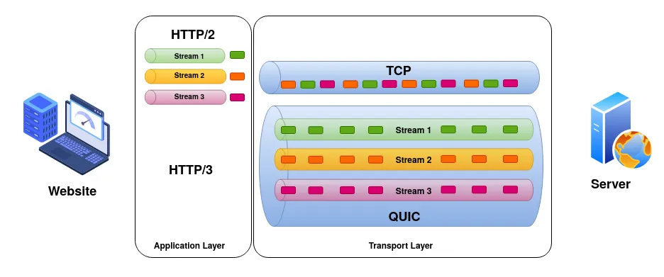
Let’s understand through a real example, let’s say you’re loading a news website with:
1 HTML file (20KB)
1 CSS file (50KB)
1 JavaScript file (100KB)
5 images (500KB each)
With HTTP/2 over TCP: If a packet from the JavaScript file gets lost, everything stops. The images that have already arrived sit uselessly in buffers while TCP retransmits the lost JavaScript packet. Total loading time: 5–8 seconds over a typical mobile connection.
With QUIC: If a packet from the JavaScript file gets lost, only that stream pauses for retransmission. The HTML renders, CSS applies styling, and images display while JavaScript quietly retransmits its missing piece in the background. Total loading time: 2–3 seconds over the same mobile connection.
Connection Migration¶
This might be QUIC’s most underrated feature, but it’s absolutely revolutionary for our mobile-first world.
The Problem with TCP+TLS¶
TCP connections are identified by a four-tuple: source IP, source port, destination IP, destination port. This works great when you’re sitting at a desktop computer with a stable internet connection. But the moment you move around with your smartphone, this becomes a nightmare.
Picture this common scenario: You’re watching a YouTube video on WiFi while walking out of your house. As you get in your car, your phone switches to cellular data. What happens?
With TCP+TLS:
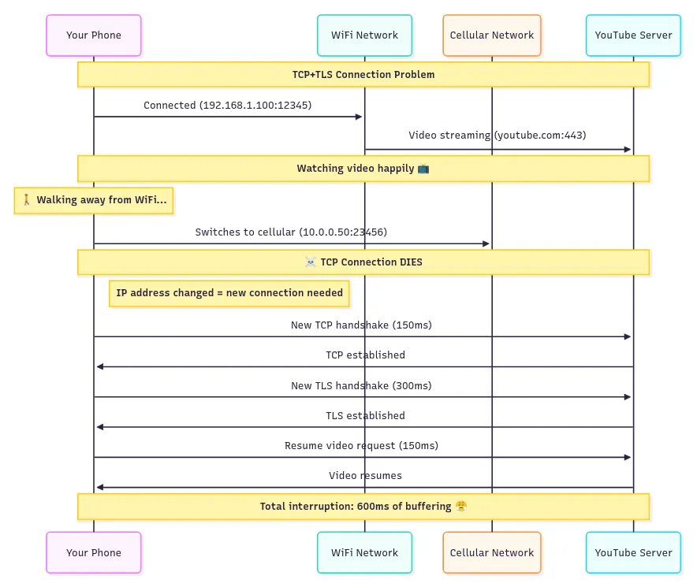
Your video stops, buffers, and you see that annoying spinning circle for almost half a second. In video streaming terms, that’s an eternity.
How QUIC Solves It¶
QUIC uses Connection IDs instead of IP addresses to identify connections. These are essentially random numbers that both client and server agree on during the initial handshake:
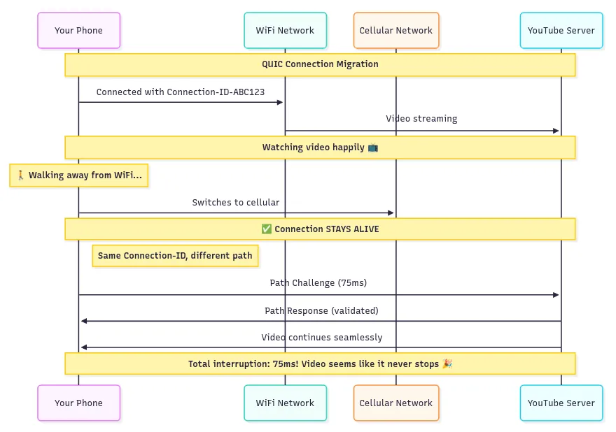
Your video never stops. The connection seamlessly migrates from WiFi to cellular without missing a beat. It’s like having a phone conversation where the call quality might change as you move between cell towers, but the call never drops.
But QUIC goes even further. It can use multiple network paths simultaneously (when supported), so you could theoretically be downloading over both WiFi and cellular at the same time, switching between them as network conditions change.
Security: Built-in vs Bolted-on¶
This is where QUIC’s architectural philosophy really shines compared to the traditional approach.
TCP+TLS: Two Separate Layers¶
The traditional web stack treats security as an add-on. TCP handles transport, and then TLS gets layered on top to add encryption:
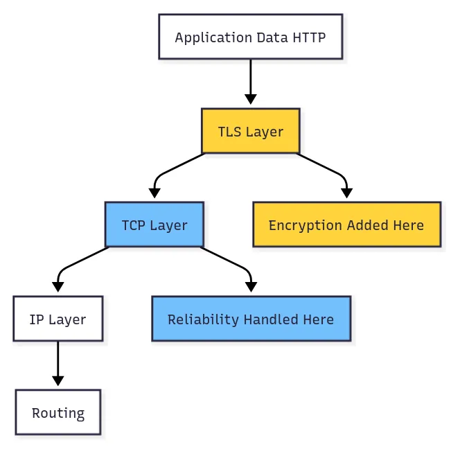
This layered approach creates several problems:
Separate Handshakes: TCP and TLS each need their own handshake, doubling the connection establishment time. Partial Encryption: While your application data gets encrypted by TLS, TCP headers remain in plaintext. This leaks information about your connection patterns, packet sizes, and timing. Middlebox Interference: Because TCP headers are visible, middleboxes often make assumptions about your traffic and can interfere with newer TLS features. Attack Surface: Having two separate security handshakes means two separate opportunities for attackers to interfere.
QUIC: Security Built-in¶
QUIC takes a radically different approach by making encryption a fundamental part of the transport protocol itself:
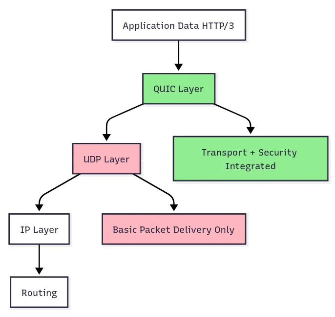
This integrated approach provides several advantages:
Single Handshake: Connection establishment and security setup happen together, cutting handshake time in half.
Comprehensive Encryption: Nearly everything is encrypted, including packet numbers, connection metadata, and even some header fields. Only the absolute minimum needed for routing remains in plaintext.
Ossification Resistance: By encrypting protocol internals, QUIC prevents middleboxes from making assumptions about its behavior, keeping the protocol evolvable.
Stronger Security Model: The integrated design makes it much harder for attackers to perform downgrade attacks or interfere with the security establishment process.
And there you have it, my digital disciples! QUIC isn’t just an incremental improvement — it’s a fundamental rethinking of how internet communication should work in our modern, mobile, security-conscious world. While TCP+TLS+HTTP/2 served us well, QUIC is purpose-built for the challenges we face today: global latency, mobile connectivity, and the need for both speed and security.
The best part? This isn’t some theoretical future technology. You’re probably using QUIC right now without even knowing it. Google services, YouTube, Facebook, and many CDNs have already deployed it. The future of the internet is here, and it’s faster, more secure, and more resilient than ever before.